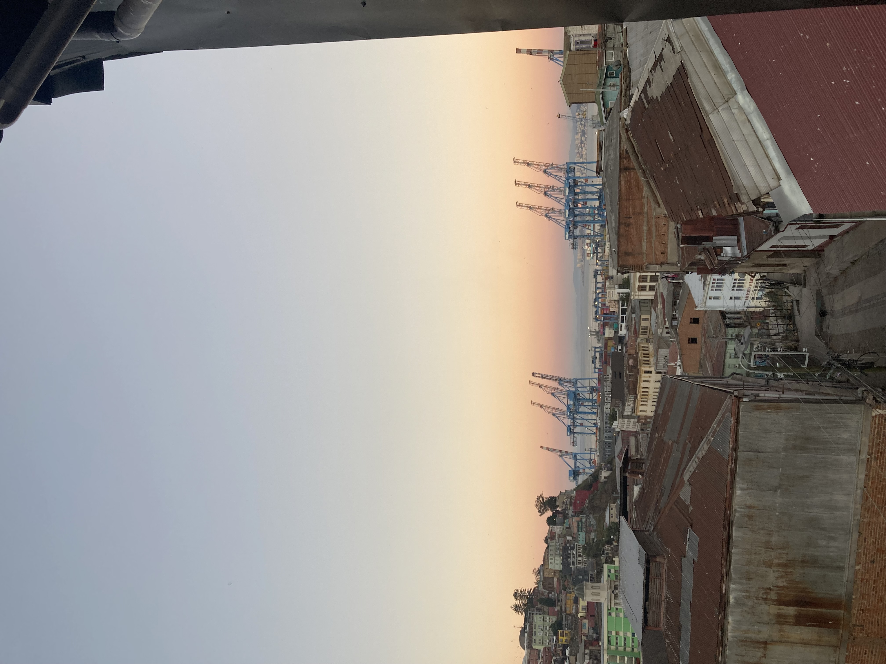

j'ai demandé à camilo pourquoi valparaiso était pleine de folie
il explique que c'est une ville pleine de stimulis, de gens, de différences, d'excitations, et que la plupart de ses habitant.e.s vit sur des collines étroites dont les maisons se pressent les unes sur les autres en direction du port. plus serré.es que dans d'autres métropole, les habitant.es quartiers doivent s'organiser là où la police et la municipalité n'interviennent pas (par manque de place ou par désinvolture ?). alors les gens se débrouillent, avec beaucoup de peinture et de musique. du même temps, au milieu de tant de contacts et de tant de nécessité, apparaissent parfois la violence, la consommation de drogue et les vols, car il faut bien vivre. tous les quartiers n'ont pas la bonne entente que parviennent à créer Camilo et ses ami.es dans le leur. de ça peut-être naît la folie du port : de ses conditions géographiques, de sa liberté, de la pauvreté économique de ses habitant.e.s.